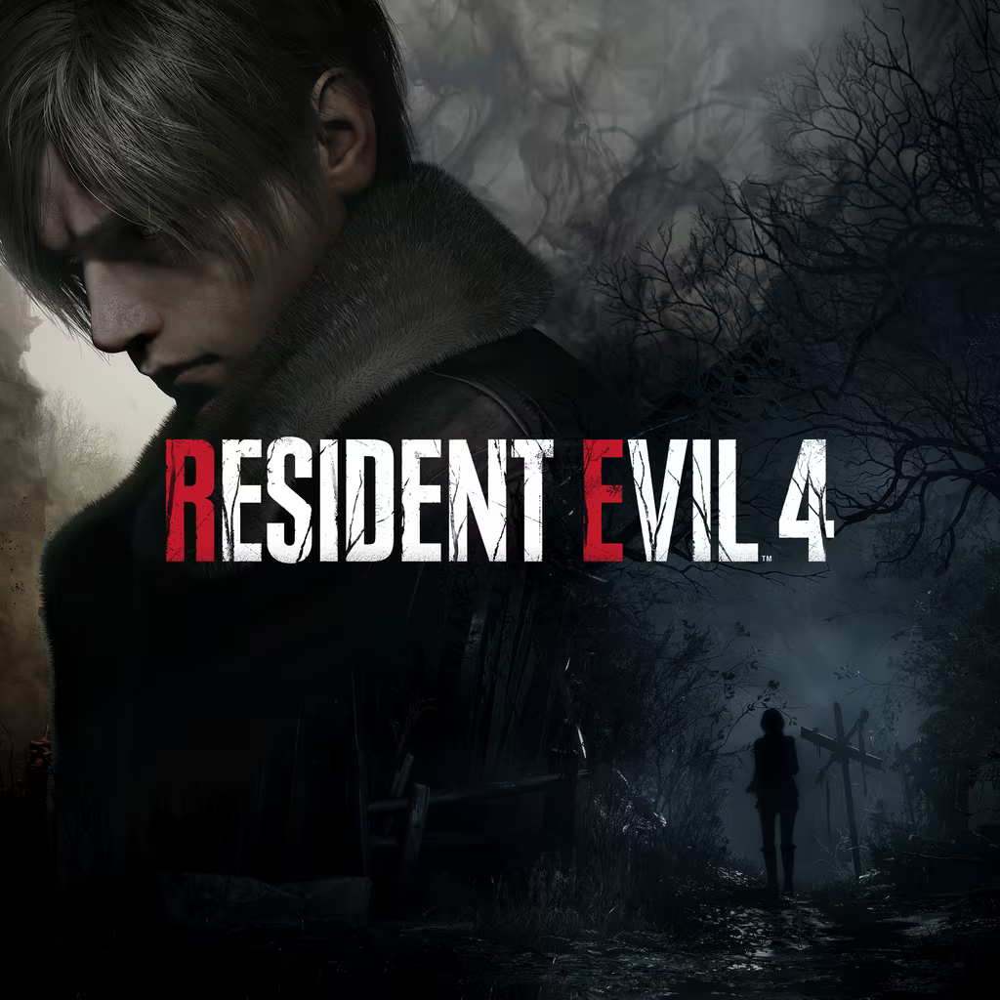

DESARROLLO DE VIDEOJUEGOS
Descubra todo el proceso de desarrollar videojuegos indies y triple A
Juegos AAA
Los juegos AAA, a diferencia de los juegos indies tienen un gran equipo detras, respaldado por grandes empresas, como se dijo anteriormente, se dice que la idea de esta categoría surgió a finales de los años 90 en convenciones de videojuegos, cuando el proyecto de Final Fantasy VII, se anunció como un desarrollo que costaría alrededor de 45 millones de dólares, siendo los "taquilleros" en videojuegos, mostrando aqui cualquier informacion util que sirva para inspirar a otros a unirse a estas empresas a hacer grandes juegos...
-
Red Dead Redemption 2
Empiezo fuerte, que, aun sin haberlo jugado reconozco lo que fue y sera este juego para la historia, marcando un legado para los videojuegos con su historia y graficos para ese entonces, con citar su pagina de steam que menciona su logro de: "Con más de 175 premios al Juego del año y más de 250 valoraciones perfectas", sigues la historia de Arthur Morgan y la banda de Van der Linde, que huyen por toda América en el albor de una nueva era
En el siguiente articulo nos muestra la historia detras de su desarrollo con la gente que hubo detrás y, el enlace para comprarlo en caso de llamar su atencion.
Descubre más Comprar juego
-

Resident Evil 4
Resident Evil 4, juego de culto para muchos al tener uno de los protagonistas más atractivo para muchos, junto a una trama interesante tipica de los Resident Evil, y el diseño de los zombies, fue la formula perfecta para cocinar un juego AAA que a cualquiera deja encantado y con una version remasterizada para steam, permite el acceso fácil a este juego para todo público.
En esta ocasion, añado un enlace a la wiki que abarca parte de su desarrollo, abarcando los problemas y situaciones detrás de la creación, y el link para comprarlo
Descubre más Comprar juego -
The Legend of Zelda: Tears Of the Kingdom
La saga de TLoZ, siempre ha sido una que se encarga de incluir mecanicas nuevas en cada entrega, pero se lucieron de sobremanera con esta, siendo considerado para muchos el juego definitivo de la saga, contando con una historia hermosa, jefes desafiantes y una gran cantidad de personajes y cosas que hacer, siendo uno de los pocos que decidi incluir aun este siendo un exclusivo de la consola "Switch", por lo buena estima que le tengo.
Aqui presento una pagina explicando el desarrollo detras de la mecanica estrella de este juego, siendo el sistema de fisicas (y construccion) y un enlace a la tienda oficial para comprar el juego
Descubre más Comprar juego